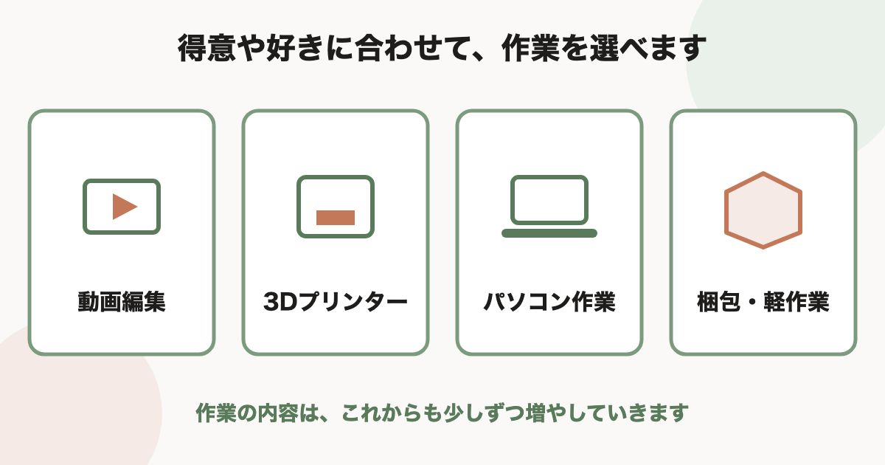

結論：LICOは、パソコン・ものづくり系の作業を少人数で進められる福岡市西区のB型事業所
LICO（リコ）は、福岡市西区今宿東にある就労継続支援B型の事業所で、運営は株式会社かむらっどです。2026年11月に開所しました。作業の中心は、YouTube動画の編集、3Dプリンターを使ったオリジナルグッズづくり、パソコン作業です。定員は20名の少人数制で、スタッフとの距離が近く、体調や気持ちに合わせて通い方を相談できます。
「事務や軽作業が中心のB型が多い」と感じている方にとって、動画編集やものづくりを仕事として体験できる点が、LICOの大きな特徴です。
就労継続支援B型とは？A型との違い
就労継続支援B型は、障害や体調の理由で一般企業での就労が難しい方が、作業（生産活動）を行いながら、働くための力を養う福祉サービスです。作業の対価として「工賃」が支払われます。
よく比べられる就労継続支援A型は、事業所と雇用契約を結んで働く仕組みです。一方、B型は雇用契約を結ばないため、通う日数や時間を体調に合わせて調整しやすいのが特徴です。年齢の上限はなく、18歳以上の方が対象です。
LICOの特徴① 仕事の中身で選べる
B型事業所を選ぶとき、意外と見落としがちなのが「どんな作業をするのか」です。毎日通うものだからこそ、興味を持てる作業があるかどうかは、続けやすさに直結します。LICOでは、次のような作業から選べます。
- YouTube動画の編集（カット、テロップ入れなど）
- 3Dプリンターでのオリジナルグッズづくり（スマホケース、名刺入れなど）
- パソコン作業（基本操作やタイピングの練習から）
- 梱包・検品などの軽作業

どの作業をやるかは、本人の希望と得意をスタッフと話し合いながら決めます。作業の種類は、これからも少しずつ増やしていく予定です。
LICOの特徴② 定員20名の少人数制
大人数の事業所では、周りの目や音が気になって通えなくなる方もいます。LICOは定員20名の小規模な事業所です。スタッフが利用者さんの顔と状態を把握しやすく、個別支援計画も、サービス管理責任者が中心となって一人ひとりに合わせて作成します。計画は6か月ごとに一緒に振り返ります。
LICOの特徴③ 通いやすさへの工夫
- 送迎あり：費用はかかりません。対象エリアや乗り降りする場所は見学のときに相談できます。
- お弁当あり：1食250円です。お昼ごはんを用意する負担がありません。
- 在宅の相談：パソコン作業は、在宅での利用も相談できます（在宅利用について）。
- 体調への配慮：体調に波がある方の通い方も、個別に相談しています。
1日の過ごし方はLICOの1日の流れで紹介しています。
利用料と工賃について
利用料（自己負担）は、世帯収入に応じて月額の上限が決まります（0円〜37,200円）。多くの方が無料または少額で利用できます。くわしくは、お問い合わせいただくか、市区町村の窓口でご確認ください。工賃については、作業の内容や時間など、状況によって変わります。くわしくは見学のときにご説明します。
利用開始までの流れ
- LINEまたはお電話でお問い合わせ
- 見学・個別相談（無料）
- 体験利用（必要に応じて）
- 受給者証の手続き（お手伝いします）
- 契約・個別支援計画の作成、ご利用開始
各ステップの詳細は見学・体験の流れとよくある質問にまとめています。
よくある質問
- 福岡市西区のB型事業所を選ぶとき、何を基準にすればいいですか？
- 作業の中身（やってみたい仕事があるか）、通いやすさ（送迎・昼食・在宅の相談の有無）、雰囲気（人数やスタッフとの距離感）の3つを、見学で自分の目で確かめるのがおすすめです。LICOは見学・個別相談を無料で受け付けています。
- LICOの定員は何名ですか？
- 定員は20名です。少人数なので、スタッフが一人ひとりの状態や希望を把握しやすい環境です。
- LICOの利用時間は？
- 月曜〜金曜の10:00〜15:00です。事業所の開所時間は9:00〜18:00です。
- 障害者手帳がなくても相談できますか？
- 手帳の有無だけで判断せず、まずはご相談ください。受給者証の取得についても、手続きを一緒に確認します。